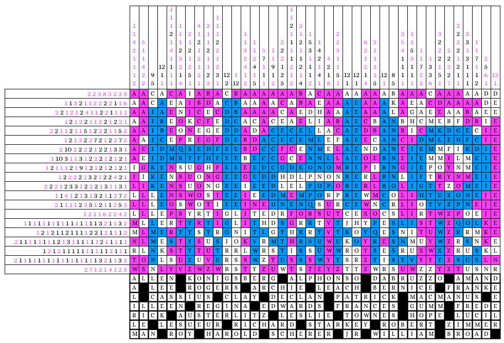
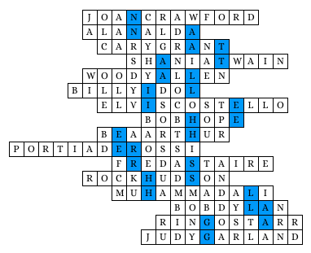

Author: Erin Rhode
This puzzle is a combination multi-colored paint-by-number and dropquote. Solving the PBN reveals a "Hello My Name Is" name badge and certain letters not colored in, which align by columns to be the same number of letters as is needed in the drop quote. Solving the drop quote gives the birth names of many famous people who changed their name (i.e. Allen Konigsberg, who is more famously known as Woody Allen).
In the second grid, the more famous stage names of all of these people fit, with the shaded blue squares matching in two of the names. Reading the shaded blue squares gives NATALIE HERSHLAG, which is the real name of actress NATALIE PORTMAN, the answer.

| Birth Name | Changed Name |
|---|---|
| Allen Konigsberg | Woody Allen |
| Alphonso D'Abruzzo | Alan Alda |
| Amanda Lee Rogers | Portia De Rossi |
| Archie Leach | Cary Grant |
| Bernice Frankel | Bea Arthur |
| Cassius Clay | Muhammad Ali |
| Declan Patrick MacManus | Elvis Costello |
| Eilleen Regina Edwards | Shania Twain |
| Frances Gumm | Judy Garland |
| Frederick Austerlitz | Fred Astaire |
| Leslie Townes Hope | Bob Hope |
| Lucille LeSueur | Joan Crawford |
| Richard Starkey | Ringo Starr |
| Robert Zimmerman | Bob Dylan |
| Roy Harold Scherer Jr | Rock Hudson |
| William Broad | Billy Idol |
